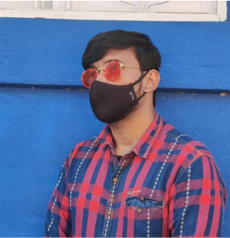

I am a pre-doctoral researcher specializing in Geometric Deep Learning, Neural Algorithmic Reasoning, Reinforcement Learning, Large Language Models, Computer Vision, and Combinatorial Optimizations.
- Education
-
Pre-Doctoral Fellowship
Institute: Indian Institute of Technology Delhi (IITD)
Duration: Aug 2023 – June 2024
Specialization: Geometric Deep Learning
Bachelor of Technology (B.Tech)
Institute: Manipal Academy of Higher Education
Duration: Aug 2019 – Apr 2023
GPA: 9.26/10
- Experience
-
Applied Scientist, Snapdeal
Duration: June 2024 – Present
- Developed a temporally evolving multi-modal graph recommendation system.
- Implemented Graph-RAG architecture for tabular data and Return-to-Origin problem.
Pre-Doctoral Researcher, LCS2-IITD cw/ META AI
Duration: Aug 2023 – June 2024
- Researched learning on higher-dimensional Riemannian manifolds.
- Continual learning on graphs using teacher agents.
Lead Researcher, LCS2-IITD cw/ Meesho
Duration: Jan 2023 – Aug 2023
- Designed novel message propagation techniques for large-scale hypergraph topology.
Deep Learning Research Fellow, BMCHRC
Duration: Nov 2021 – Apr 2022
- Conducted research on Geometric Manifold Generation for cancer studies.
Algorithmic Design Intern, Aspire Research Park
Duration: Dec 2019 – Jan 2020
- Developed algorithms to improve code readability and computational efficiency.
Software Developer Intern, CueMath
Duration: May 2020 – Jun 2020
- Automated report generation processes using feedback analysis.
- Skills
-
Languages: Python, C++, C, Java, Julia, JavaScript
Frameworks: PyTorch, TensorFlow, FastAI, Django, Flask
Other Skills: Competitive Programming, Machine Learning, Graph Networks
- Publications
-
- Task-aware Latent Graph Rewiring: Addressing OSQ-OSM Dilemma
- ImmuneGAN: A GAN-based architecture for network intrusion detection
- Biases and De-Biasing Strategies in Graph RecSys
- Efficient Garbage Monitoring System using GRUBin
- Projects
-
- FAITH: Reducing hallucinations in dialogues with Knowledge Graphs
- DreamSpace: User-preferential floor planning via LLMs
- PersonaKG-RAG: Personalized Recommendation Systems using Graphs
- MRecSys: Multimodal Graph Recommendation System
- Awards
-
- President's Gold Medal for B.Tech Thesis
- INSPIRE National Award - AIR 7
- Winner - Learn IT Codeathon